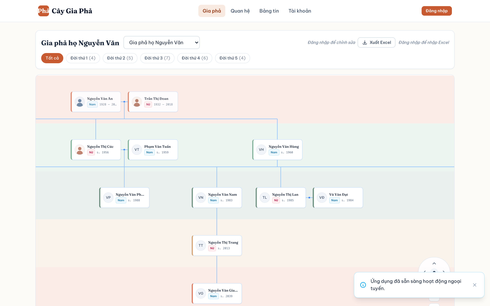
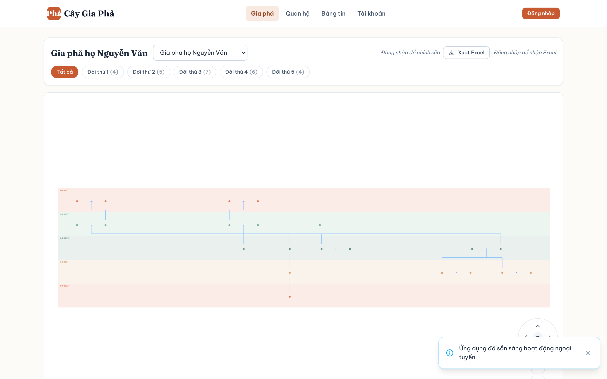

/tree · route-state contract
Gia phả: giữ nguyên trình kết xuất
Ảnh quan sát là UI hiện đang chạy, không phải bản thiết kế lại Canvas. Quiet Clarity chỉ quyết định vỏ, màu nền xung quanh, thanh công cụ/trạng thái và ứng xử responsive. Không sao chép ảnh này làm UI.
Quan sát thực tế · success · 5 lần phóng to

Quan sát thực tế · fit-view / dot markers

TreeView.vue: store.loading · thay thế viewport
Đang tải cây gia phả…
Không để lộ node/connector cũ dưới lớp pending. Bộ lọc/đường dẫn shell giữ kích thước.
TreeView.vue: store.error · EmptyState/retry
Không thể tải cây gia phả
Lỗi mạng hoặc quyền truy cập được mô tả bằng văn bản; nút thử lại gọi đúng hành vi hiện tại.
TreeView.vue: hasLoaded và roots.length=0
Chưa có dữ liệu gia phả
Thêm thành viên đầu tiên hoặc nhập Excel. Nút thêm chỉ hiện khi `auth.isAuthenticated`; người xem chỉ thấy thông điệp, không có hành động ghi.
Giữ các trạng thái quyền thực tế
Khách chưa đăng nhập
Shell hiển thị Đăng nhập. Bộ lọc/xem cây vẫn dùng quyền hiện có; thay “Thêm thành viên” bằng “Đăng nhập để chỉnh sửa”, không chuyển thành lỗi mạng.
Đăng nhậpDemo không thể liên kết hồ sơ
Khách, Demo, người thật chưa gắn và đã gắn có shell khác nhau; không ép badge Demo vào khách.